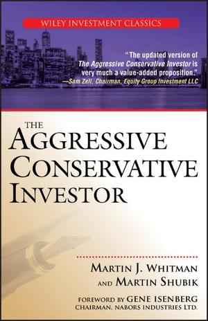

马丁·惠特曼1924年出生于纽约布朗克斯区，父母是从波兰移民美国的犹太人。二战期间在海军服役后，惠特曼靠《退伍军人权利法案》进入雪城大学，1949年以优异成绩拿到工商管理学士学位，后来又在新学院大学（New School for Social Research）读了经济学硕士。他先在Shearson Hammill做证券分析师，1974年自立门户成立经纪自营商M.J. Whitman & Co.，1986年创办第三大道资产管理公司（Third Avenue Management），此后二十多年执掌旗舰基金第三大道价值基金（Third Avenue Value Fund），并在耶鲁大学管理学院教授价值投资与困境投资课程长达三十年。他的口头禅是"安全又便宜"（safe and cheap）——这也是1979年他与耶鲁数理经济学教授马丁·舒比克（塞缪尔·诺克斯数理制度经济学讲席教授）合著《积极的保守投资者》时定下的基调。此书2005年由Wiley重新收入"投资经典"系列再版，距初版已过去二十六年。
全书的立论起点，是把投资者拆成两类：一类是只能被动接受公司分红与股价波动的"局外少数股东"（outside passive minority investor），另一类是真正坐在驾驶座上、能决定资产怎么处置的"控制型投资者"。惠特曼认为，多数价值投资理论只教前一种人怎么看财报，却没教他们像后一种人那样思考——公司价值真正被重估的时刻，往往不是靠日常经营积累的利润，而是靠他称为"资源转换"（resource conversion）的事件：并购、资产整体买卖、重大财务重组、控制权转让、拆分或税务筹划。为此他给出四条筛选安全边际的硬指标：财务状况足够稳健、管理层诚实且兼顾债权人与股东利益、信息披露充分、买入价低于净资产价值。这套方法明显偏离了格雷厄姆-多德式只盯盈利倍数的传统路子，也不回避主动介入公司治理。
方法最具体的部分不是估值倍数，而是"沿着文件线索走"。全书依次讨论SEC申报文件、财务会计、通用会计准则的局限、净资产价值、亏损公司、现金分红和资产转换投资，附录再用Schaefer Corporation与Leasco Data Processing的控制权交易作案例。作者提醒局外股东：账面资产只有在没有优先债权、租约、养老金义务或控制股东侵占时才安全；盈利也可能因为会计选择而失真。2005年版新序言把原来的"财务完整性方法"改称更直白的"安全又便宜"，并说明披露增加和金融工程变化会改变调查工具，却没有改变四项筛选条件。
价值投资博主大卫·默克尔（David Merkel）在Aleph Blog的书评里，把这套逻辑概括为"是内部的主动控制型投资者在开车"（the inside active control investors drive the bus）：普通股东能得到什么，取决于控制人如何配置资产，也取决于自己能否像内部人一样读懂资本结构。Wiley为2005年版收录的推荐语同样很具体，山姆·泽尔指出，金融工程只会改进风险测量方法，"却不会改变价值的基本原理"。这本书的难点也在这里：案例和监管语境多属于20世纪70年代，名词密集，不能照抄当年的折价标准；可保留的是调查顺序——先查偿债能力和权利顺位，再估可实现的资产价值，最后判断谁有权、又是否有动机触发价值释放。这样才能区别"账面便宜"与普通股东真正可取得的便宜。惠特曼2012年退出第三大道价值基金，2018年去世；舒比克则把博弈论和制度经济学带进了这套以控制权为中心的分析。